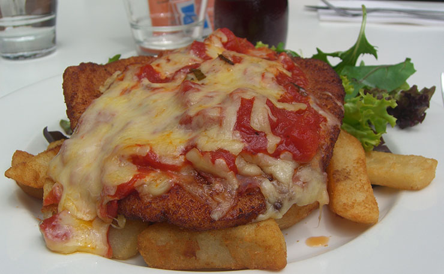

Follow Steps to make a CHICKEN PARMIAGIANA: Ingredients: 1 egg, beaten 2 ounces dry bread crumbs 2 skinless, boneless chicken breast halves ¾ (16 ounce) jar spaghetti sauce 2 ounces shredded mozzarella cheese ¼ cup grated Parmesan cheese! Directions Gather the ingredients. Preheat the oven to 350 degrees F (175 degrees C). Lightly grease a medium baking sheet. Pour egg into a small shallow bowl. Place bread crumbs in a separate shallow bowl. Dip chicken into egg, then into bread crumbs. Place coated chicken on the prepared baking sheet. Bake in the preheated oven until no longer pink and juices run clear, about 40 minutes. Remove from the oven. Pour 1/2 of the spaghetti sauce into a 7x11-inch baking dish. Place chicken breasts over the sauce, then cover with remaining sauce. Sprinkle mozzarella and Parmesan cheeses on top. Continue baking until heated through and cheeses have melted, about 20 more minutes.
